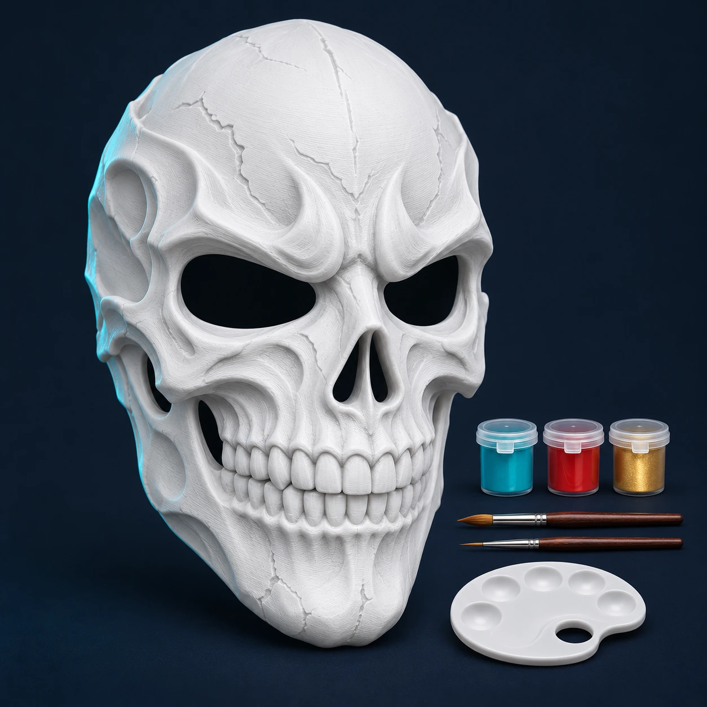

Schedel
Kies wit om zelf te verven, één gewenste kleur of een volledig handbeschilderde uitvoering met meerdere kleuren en details.
Levertijd en bedenktijd
Levertijd: binnen maximaal 30 dagen na je bestelling. Verzending met PostNL of DHL, met track & trace.
Maatwerk: kies je voor personalisatie (naam, tekst, logo, eigen ontwerp of eigen maat), dan wordt het product speciaal voor jou gemaakt en geldt geen herroepingsrecht (art. 6:230p sub f BW). Zonder personalisatie heb je 14 dagen bedenktijd na ontvangst. Zie de algemene voorwaarden en het modelformulier voor herroeping.
Productveiligheid en fabrikant
Fabrikant: Makers 3D Labs (handelsnaam van Bruwin Solutions), Houtzaagmolen 96, 2986 GE Ridderkerk, Nederland · info@makers3dlabs.nl · KvK 42219037
Waarschuwingen en gebruik:
- Decoratief masker / wandobject. Geen speelgoed en geen beschermingsmasker.
- Niet dragen tijdens sport of in het verkeer; let op scherpe randjes bij het opzetten.
- Bevat mogelijk kleine onderdelen: niet geschikt voor kinderen onder 3 jaar.
- Niet blootstellen aan hoge temperaturen (boven ca. 50 °C) of langdurig fel zonlicht; het materiaal kan vervormen of verkleuren.
- Handbeschilderde delen alleen droog of licht vochtig afnemen.
Elk product wordt in Nederland op bestelling gemaakt. Vragen over veiligheid of een melding? Mail ons via info@makers3dlabs.nl.